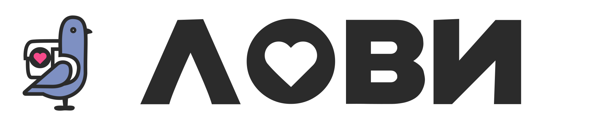
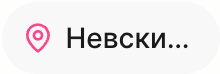
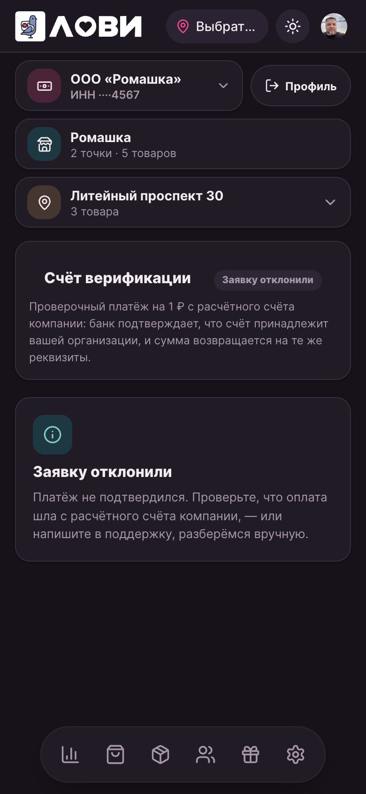
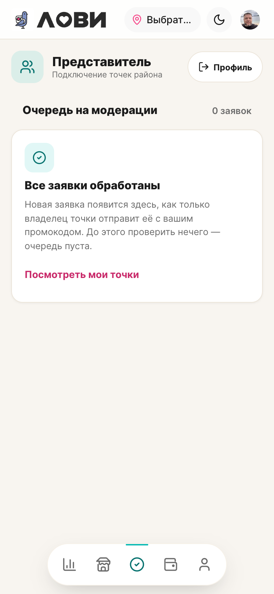

LOVII · дизайн-система · решения для приёмки · 28 сентября 2026
Ниже — каждый вопрос живым макетом: как сейчас, как можно, и что это даёт в цифрах. Макеты собраны на реальных токенах и размерах приложения; рядом местами — живые кадры со стенда.
Отвечайте буквой: например «1-B, 2-Б, 3-да, 4.1-B, 4.2-C, 4.3-Б». После решения внесу правку в канон и передам в исполнение.
Замер: самый светлый угол градиента даёт 3.35 при норме 4.5 для мелкого текста (14 px жирного). Тёмный край — 5.22, там всё в порядке. Ниже три варианта; рекомендую B — минимальное изменение, кнопка остаётся розовой и узнаваемой.
A · как сейчас — светлый край #f64a8a
B · светлый край глубже — #d6336f рекомендую
C · сплошной бренд-тёмный — без градиента
Живой кадр со стенда — кнопка «Перевести», 358×44
Почему не «просто увеличить буквы»: чтобы текст считался «крупным» по норме, кегль кнопки пришлось бы поднять с 14 до ~19 — кнопки станут заметно тяжелее. Вариант B честнее.
Золотой текст статуса на мягкой золотой подложке: на белой карточке 4.48, на серых поверхностях до 4.25 (в аудите — 4.36). Норма — 4.5. Сдвиг текста на два шага темнее решает вопрос, глазу почти не заметен. Тёмная тема — не меняется (там 6.26 с запасом).
A · как сейчас — текст #8a6a25
Б · текст глубже — #80611e рекомендую
В · минимальный сдвиг — #856621 (если хочется совсем незаметно)
Где живёт
Чипы статусов заявок и точек в кабинетах (тот же токен золотого текста — «премиум»-подписи). Меняется только светлая тема.
По разбору — около 17 формальных обращений и слова из запрещённого списка («магазин», «каталог»). Ваш ориентир принял так: «твой / твоя / твои / тебе / тебя» — да; прямое «Ты …» в начале фразы — не пишем; где местоимение можно убрать без потери смысла — убираем. Вот реальные строки из приложения и что с ними станет:
| Сейчас | Предлагаю | Приём |
|---|---|---|
| Введите ваш номер телефона | Введите номер телефона | местоимение убрано |
| Ваш заказ | Твой заказ | «твой» ровно по вашему правилу |
| Ваша точка активна! | Точка активна! | восклицание остаётся, канцелярит уходит |
| Ваша точка на витрине | Точка на витрине | чище и короче |
| Вас пригласил представитель · код AA2BTK | Тебя пригласил представитель · код AA2BTK | «тебя» — мягкая форма |
| Вам пока не назначено ни одной точки — попросите владельца выдать доступ. | Пока не назначено ни одной точки — попросите владельца выдать доступ. | без «Вам» |
| Ваша доля — 40% пула LOVII… | Твоя доля — 40% пула LOVII… | «твоя» |
Ещё правила прохода: «магазин / филиал / заведение» → «точка»; «каталог» → «товары»; кнопки — глаголом («Проверить», «Оплатить»), без «Вы» и без «пожалуйста».
Решение: принимаю эти правила как стандарт текстов и отдельным проходом обновляю ~17 мест? да / доработать
Сейчас 40×40 — на 4 px меньше нормы касания 44. Вижу три пути; рекомендую B: визуально ничего не меняется, а зона касания становится нормативной — как уже сделано у иконок основной шапки.
A · как сейчас — 40×40, зона = размеру
B · 40 + невидимая зона 44 рекомендую
C · видимая 44×44
Живой замер со стенда: пилюле адреса достаётся 109 px, хотя рядом логотип занимает 153 px. Итог — «Невский про…», а в пустом состоянии «Выбрат…». Вот как это выглядит сейчас и что дают варианты; рекомендую B — логотип на телефонах компактнее, как в каталоге демо-витрины.
A · как сейчас — лого 153 px, пилюля 109 px

B · лого по демо на узких — 92 px рекомендую
C · B + кнопка темы уходит в настройки на телефонах
Живой кадр: пилюля «как сейчас»

Решение: какой вариант? A / B / C (можно «B, но лого оставить крупнее» — обсудим словами)
Поля сейчас 42 px по высоте — на 2 px ниже нормы касания 44. Поле широкое, риск для пальца минимальный, но раз наводим стандарт — предлагаю довести. Ниже как выглядит разница.
A · как сейчас — 42 px
Б · довести до 44 рекомендую
В ветке лежат четыре правки из разбора 27-го. Вот куда смотреть на стенде после выкладки — каждая с картинкой «после»:
| Экран | Что проверить |
|---|---|
| Оплата МСП (отказ) | Нет суммы, кода и блока «Как оплатить»; видна причина и поддержка; кнопка «Проверить статус» — 44 px. |
| Кабинеты, тёмная тема | Розовые ссылки пустых состояний читаются (5.01), светлая тема — не изменилась. |
| МСП → Товары | Табы «Добавить / Категория» со стилями, тап-зона 44; блок категории не «голый». |
| Статусы заявки | Везде «Инсталляционный платёж» (8 мест, без опечатки). |
Оплата МСП — тёмная тема, после правок

Очередь заявок представителя — после правок

Начну с основ и соберу полный каталог отдельным проходом — с картинкой и каноном по каждому. Пока — десять имён, которые мы уже используем в работе:
| Имя | Что это | Где видно |
|---|---|---|
| Каскад | Карточка-переключатель: имя + значение + шеврон, тап открывает шит выбора | Переводы («Откуда»), кабинет МСП |
| Шит | Нижняя панель выбора со списком и маркером «выбран» | Выбор счёта, адреса, каналов |
| Пилюля | Капсула в шапке (адрес) и мелкие капсулы-действия | Шапка всех экранов |
| Чип статуса | Метка состояния заявки/точки в тонах (тиффани/золото/розовый) | Кабинеты, списки |
| Плитка-акцент | Квадратик с иконкой на мягкой заливке (PAY — розовая, бизнес — тиффани) | Переводы, шиты источников |
| Карточка | Белый блок с бордером и радиусом 16 — база кабинетов | Везде |
| Тост | Всплывающее уведомление, шесть тонов | По всему приложению |
| Поле | Ввод с подписью, видимым бордером и сообщением об ошибке | Формы |
| Кнопка | Пилюля-действие: брендовая (градиент), контурная, «тихая» | Везде |
| Сегмент | Переключатель из двух-трёх вариантов внутри экрана | Кошелёк, каталоги |
Что уже решено и ждёт только команды
Выкладка готовых фиксов (оплата, контраст, каталог, опечатка) — по вашему «пуш». Скрины и чек-лист — выше.